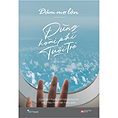
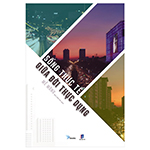
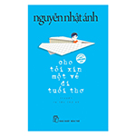

| Dám mơ lớn đừng hoài phí tuổi trẻ - Lư Tư Hạo |
 |
Dám mơ lớn, đừng hoài phí tuổi trẻ là cuốn sách dành có các bạn trẻ đang cảm thấy chênh vênh, lạc lối. Giúp tiếp thêm sức mạnh cho các bạn trẻ vững bước trên hành trình theo đuổi ước mơ của mình, dám sống hết mình với thanh xuân. |
|
| Sống thực tế giữa đời thực dụng - Mễ Mông |
 |
Trong quyển sách Sống thực tế giữa đời thực dụng nêu lên nhiều quan điểm tích cực trong cuộc sống. Dù có hơi hướng thiên về những điều thực tế thậm chí là thực dụng, nhưng nó sẽ giúp bạn không mơ mộng hay ảo tưởng về cuộc sống thực tại. Thay vào đó, bạn biết đâu mới thực sự là hướng đi của mình. |
|
| Cho tôi xin một vé đi tuổi thơ - Nguyễn Nhật Ánh |
 |
Cho tôi xin một vé đi tuổi thơ là một cuốn sách được nhiều người thích thú. Cái hay nằm ở chỗ ngoài những câu chuyện về trẻ con, còn là những đoạn mà tác giả đan xen suy nghĩ về cuộc sống. Cảm ơn người lớn là một chuyến đi trở về tuổi thơ thật sự ngọt ngào và thú vị. |
|